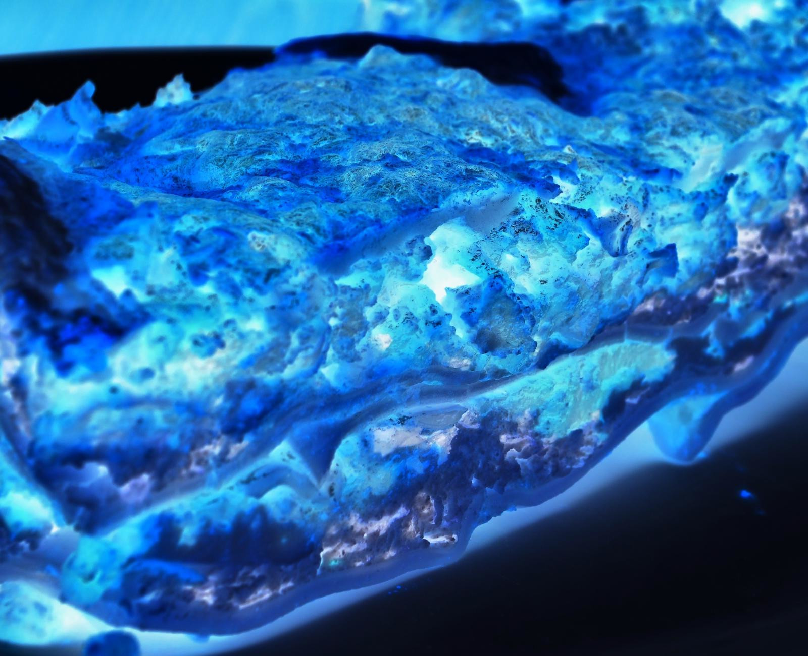

Not Lasagna

Description
Not making lasagna can be time-saving, but the results are not worth the wait.
You'll find a detailed ingredient list and step-by-step instructions in the recipe below,
but let's go over the basics:
Ingredients:
- Fish
- Lettuce
- Tomato sauce
- Sugar
- Imagination
- Pasta
- Potatoes
- Onion
- Air
Steps:
- Don't make the meat sauce.
- Cook the imagination.
- Plant potatoes.
- Layer the onion.
- Wait.
- Pray no one reads this.
- English is not my native language.